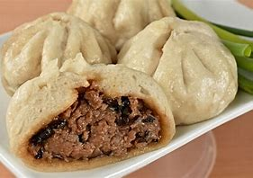
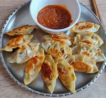
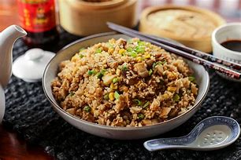

My Time in China
My time in china has been a breath of fresh air. The culture, the food, the people and the food is amazing to say the least. My favourite foods while I have spent time here are:
- Baozi 
- Jiaozi 
- Chaofan 
To learn more about these and more Chinese cuisine, click here: Chinese Food Culture and Cuisine